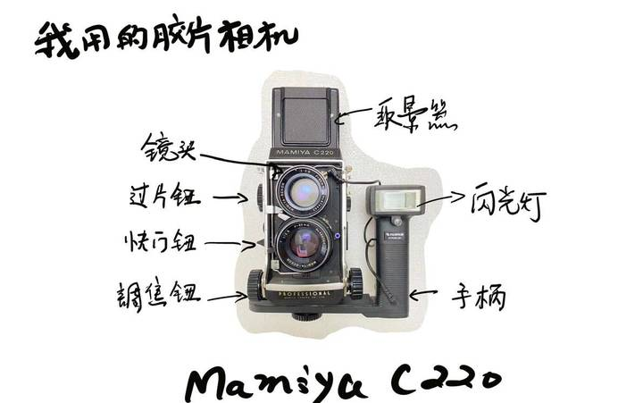
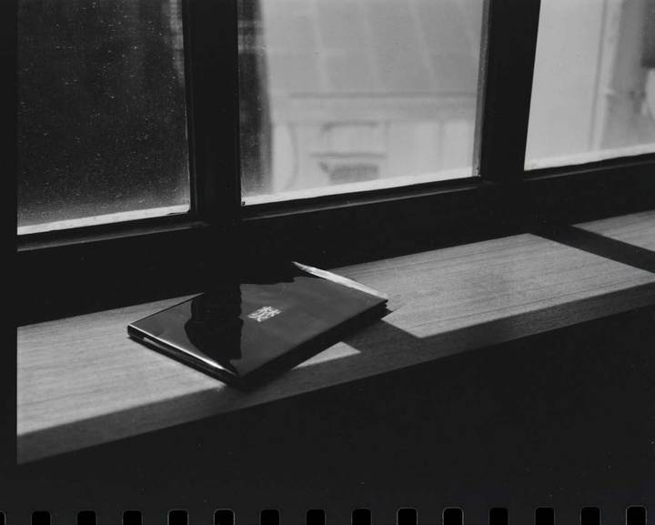

HANDS-ON WORKSHOP
胶片冲洗工作坊。
让拍下的影像慢慢显现。
照片从按下快门到成为可见影像，中间还有一段值得亲手经历的过程。我们计划从黑白胶片出发，一起认识影像显现的另一面。


01
从胶片开始
认识胶片影像与相机，带着好奇理解一张照片如何被记录。
02
走近冲洗过程
了解黑白胶片冲洗的基本环节、设备与现场操作方式。具体实践范围将在场次说明中列出。
03
重新看见照片
在影像显现之后，讨论照片、底片与记录之间的关系。扫描和放大是否包含，以实际场次为准。

UPCOMING / 参与方式
下一次，一起做。
工坊正在筹备。具体时间、地点、主讲人、材料和参与方式，将在场次确定后公布。
如果你是文化空间、社区或活动组织者，欢迎和我们交流工坊合作。
工坊合作与咨询